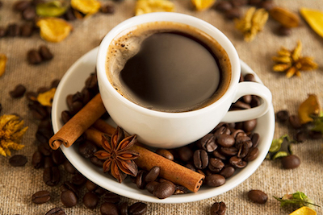

Coffee and chow
Coffee and chow gir deg nydelig kaffe i rustikke og koselige lokaler. Her kan du få en nybakt brownie til kaffen eller en rykende fersk italiensk pizza rett fra steinovnen.
Coffee and chow gir deg nydelig kaffe i rustikke og koselige lokaler. Her kan du få en nybakt brownie til kaffen eller en rykende fersk italiensk pizza rett fra steinovnen.
Mormors Cafe- en koselig cafe i hjertet av Gamlebyen Fredrikstad. Et fantastisk sted å legge turen innom for å nyte en stille lunch med en god bok, en herlig plass for å treffes i store og små grupper, en vennine kaffe, en tur med en tante eller bestemor. På Mormors finner man garantert noe som faller i smak av mat, drikke og søtsaker. Vi holder fokus på økologi, lokale råvarer og ærlige smaker.
På Café Magenta i Gamlebyen i Fredrikstad stiller de med levende musikk over 100 ganger i året! Hver eneste onsdag og fredag - ÅRET RUNDT - kan man komme til caféen og hygge seg med flotte artister i unikt historisk miljø. De holder til på Bastion 5, innenfor vollgravene på Gamlebyens sørlige spiss.